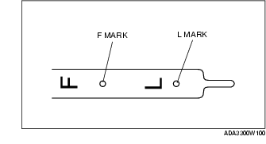

1. Position the vehicle on level ground.
2. Warm up the engine to normal operating temperature.
3. Stop the engine and wait for 5 min.
4. Remove the dipstick and verify that the oil level is between the F and L marks on the dipstick.

-
• If the oil level is below the L mark, add the oil.